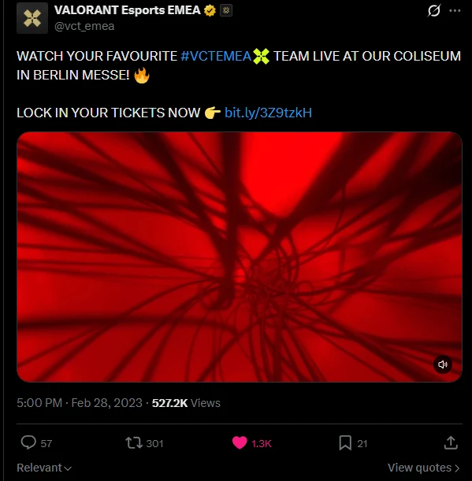

Overview
VALORANT's EMEA partnership league launched in 2023, with ten partner teams and a new studio in Berlin. In-house at Riot Games I owned the social and creative strategy for its first season: the launch, the always-on content that carried it, and the work that brought fans to Berlin.
Highlights
1M
Views, Join Us
10K+ engagements
~600K
Views, Unlocked
~40K engagements
1M+
Reach through the influencer programme
~10%
Conversion on ticket-link clicks
Lock Your Tickets
The challenge
2023 was a new structure for VALORANT esports in EMEA: ten partner teams, a new studio in Berlin and a season that ran for months. Fans needed a reason to commit to a league they hadn't seen yet, then reasons to keep coming back between the big moments, and to turn up in person.
My role
As Social Media Strategist, EMEA at Riot Games, I owned the social and creative strategy for VALORANT Esports in the region, connecting audience insight with global brand objectives and taking campaigns from brief to launch to measurement.
Across the season I set the social and creative strategy and led delivery: briefing and managing agencies and production vendors, building content calendars, running the influencer programme with creators on the ground in the studio, and reporting performance to optimise the mix.
Strategic approach
Win fans at launch, then give every kind of fan a reason to stay:
- Lead with the playersPersonalities sell a new league faster than logos and formats do.
- Grow every team's fandomGive each partner team its own platform, so no fanbase is left out.
- A format for every kind of fanRivalries for the competitive, nostalgia for long-time fans, personality for new ones, creators to bring the league to their own communities.
- Set a rhythmWeekly series between the tentpoles, so the channels never go quiet.
- Bring it into the roomPaid and experiential work that turned viewers into visitors at the Berlin studio.
- Optimise the mixTrack each format and put more behind what's working.
Launch and teasers
Introducing a new league, its ten teams and its biggest moments.
League launch
Join Us
The launch film for the first season of the partnership league: players in everyday Berlin, the league's new home, each with a character beat, inviting fans into the new league rather than announcing it at them. Photography from the same shoot fed launch-week posts and always-on content, and a cinematic opening teaser followed on the eve of the season.
My role
I set the social and creative strategy, worked with the creative and production teams on the concept and shoot, planned the content calendar and rollout across channels, and owned performance tracking after launch.
1M
Views, Join Us
10K+ engagements
100K
Views, opening teaser
3K engagements


Long-form documentary series
Unlocked
A ten-episode documentary series, one per partner team, filmed in each team's hometown and headquarters ahead of the league launch. The players talk about their motivations, their goals and what they're excited about this season, so fans had reasons to pick a side before the first match. Likely the most popular series on the VCT EMEA YouTube channel to date.
My role
I owned the series as part of the launch: defining the format and editorial angle, coordinating with the ten partner teams, working with production on the shoots and edits, and planning the YouTube release schedule and social cut-downs.
~600K
Total views
~40K
Engagements
Also in the season
What We're Made Of
The teaser for the VCT EMEA 2023 Playoffs.
Ascension promo
A highly abstract promo for Ascension, where tier 2 teams compete for a place in the league. I co-created it with a Madrid-based studio.
50K reach · 2K engagements
Game Changers EMEA promo
Promo film for VCT Game Changers EMEA 2023. My role: creative input and social campaign planning.
Always-on content
The series and programmes that carried the season between the tentpoles, with a format for every kind of fan.
Quiz series
Frenzy Fire
A quick-fire quiz series that tests VCT EMEA pros on their own game and league: bold graphics, a scoreboard and players who really want to win. The same format scaled across the whole league every week, and every round was built to clip for Shorts, Reels, TikTok and X. It became one of the league's most popular formats, and returned in 2024.
My role
I owned the format's place in the content strategy, planned the question sets and player line-ups with production, and managed publishing and cut-downs across platforms.
500K
Views, 2023 series
7 videos
70K
Engagements, 2023 series
The rest of the slate
Showstopper
Two-to-three-minute films about the rivalries between regions, countries and teams, promoting each week's broadcast.
260K views · ~7K engagements
Run It Back
A play-analysis series with VCT EMEA and VCT Game Changers EMEA players, which continued into 2024. Episode one: AsLanM4shadow.
30K views · 1K engagements across five videos, 2023–24
First Champs
Reuniting the first-ever VCT champions, from EMEA, in a piece of league history fans could rally behind.
40K reach · 2K engagements
Do It Yourself
A three-episode series.
100K views · ~8K engagements
Talent announcement
An unconventional talent announcement: a video instead of a static graphic, crossing over with the League of Legends LEC studio and talent.
~10K reach · ~700 engagements, above average for this kind of announcement

Admission forms
Players filled in admission forms with personal facts and quirky drawings, inspired by how Formula 1 and other top sports present athletes.
~100K reach · ~6K engagements

Influencer watch parties
Weekly watch parties hosted by creators, plus on-the-ground content with them in the studio.
1M+ reach across hundreds of influencers
2023 partners
- Logitech G
- Aim Lab
- Cougar
- Red Bull
Bringing fans to Berlin
Paid and experiential work for the league's new home at Messe Berlin.
Paid ticketing campaign
Lock Your Tickets
A paid and organic campaign to sell tickets for the new studio, built from the ground up at Messe Berlin: a brand-new venue with no track record, and an audience used to watching online. A fast, red-drenched trailer made the live room feel like the place the season happens. Paid social reached in-market fans beyond the organic audience, and UTMs on every link meant spend and messaging could shift towards what was actually selling tickets.
My role
I owned the social campaign: the creative brief for the trailer, the organic rollout, and the paid set-up with our media partners, with UTM tracking on every link so ticket clicks and purchases could be attributed back to the creative.
~600K
Views
~10%
Conversion rate on UTM clicks
527.2K
Views on the launch post on X

Experiential
Gekko's bubble tea truck and the fan wall
A VALORANT-branded bubble tea truck themed on the agent Gekko, part of a wider 2023 out-of-home campaign. It was parked near Alexanderplatz in Berlin for three weekends only, then came into the studio, where visitors used the tokens they got on entry to redeem a free drink. It was one of the most popular activations of the year, and fans asked for it to come back.
Alongside it, a VCT EMEA-branded wall at the Coliseum where fans could sign their names and leave their mark on the league's history.
My role
I managed the social side of the truck end to end: the content plan, capture on site, community engagement and reporting on sentiment and reach. The fan wall was my idea, planned from the start as both a social moment and a piece of VCT EMEA history.
2,000+
Free bubble teas served